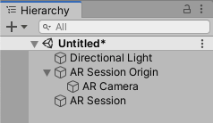
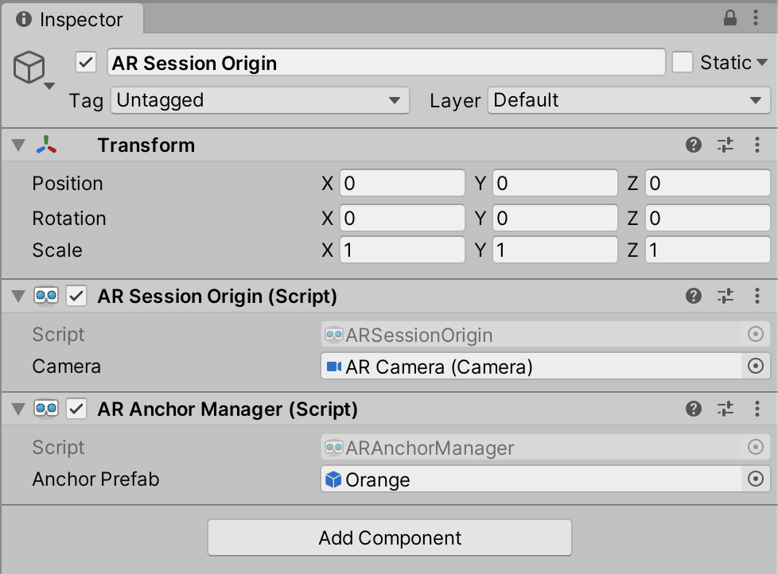
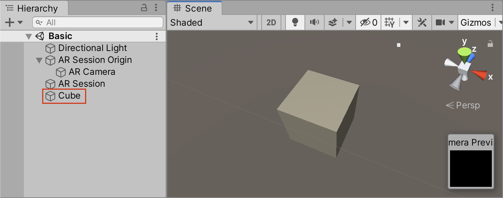
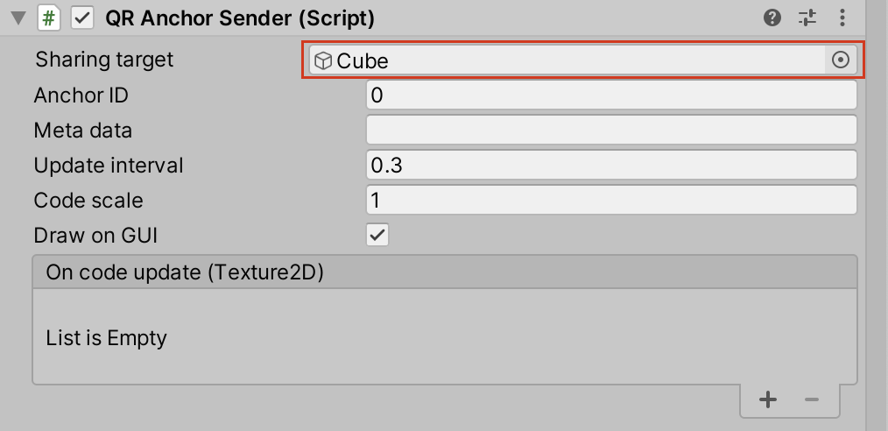
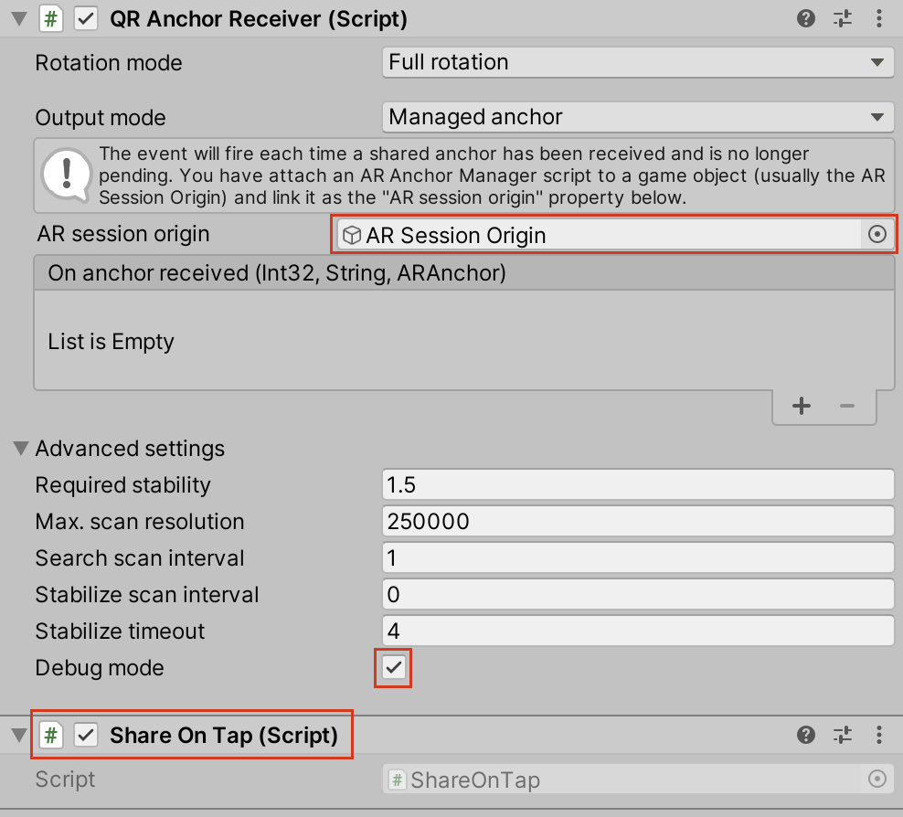
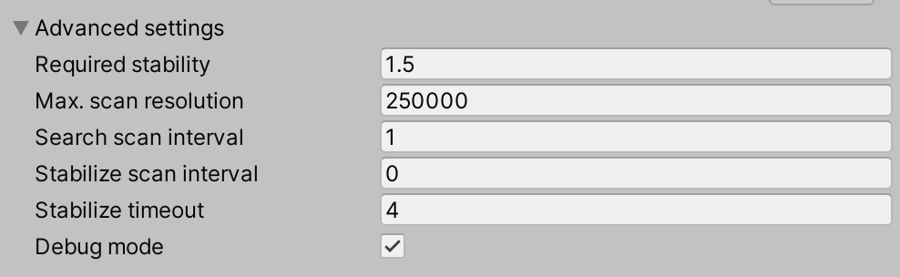
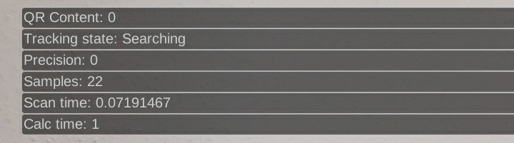

First things first
This document is about the QR Anchor Sharing plugin. If you are looking for the documentation of the underlying QR Foundation plugin which is included in this asset as well, have a look here.Example Setup
Preliminaries
QR Anchor Sharing is built to work together with AR Foundation. Therefore, before you can get started, you will need to integrate AR Foundation into your project. As AR Foundation is a new and constantly evolving technology, this process will vary based on the version you are using. Try to follow the official guide.
When you're done, you should end up with a scene like this:
The AR Session and AR Session Origin can be created pre-configured from the GameObject > XR menu. Make sure this basic setup works before you proceed. To confirm, you can place objects in the scene and look around with your phone to see if they stay at fixed locations in the physical world.
Lastly, you will need to attach the AR Anchor Manager script to the AR Session Origin. For this tutorial you have to specify an Anchor Prefab (you can use one from the Samples/Basic folder of this project or create one from a 10cm cube). This is only to get a visible result without having to write code. In a production scenario you will want to attach your GameObject to the generated anchor manually as described here and as done in the advanced sample scene of this asset.
Basic usage
The two essential scripts of this package are QR Anchor Sender for sending an anchor and QR Anchor Receiver for receiving an anchor. Attach them both to the AR Camera.
Sender setup
The QR Anchor Sender continuously provides a QR code texture that can be used to transmit the pose of an arbitrary object in the scene to another device with a different reference system. You can receive the texture as a Texture2D and render it manually, or let the script draw it on the GUI for you. While you may probably want to go for option one in a production scenario, this basic scenario will cover option two as no additional code is required there.
Add the GameObject that you want to share to the scene. I recommend to use a plain white 10cm cube and place it at the origin. Set this as the Sharing target property of the QR Anchor Sender. You can leave the other properties unchanged.
 Next, you will need a way to trigger the display of the QR code. The Share On Tap script which is included in this asset will do just that: It shows the QR code while you press and hold anywhere on the screen (Pro tip: Don't cover the code with your finger). Attach it to the AR Camera as well. Take a look at the script. The two important statements are sender.StartSharing(); (line 24) and sender.StopSharing(); (line 32). Before StartSharing is called, the sender script will be idle.
Try it out! Locate the cube with your phone to make sure that it stays aligned with the real world. Then tap the screen to see if the QR code is rendered. It should change about three times a second.
Receiver setup
The QR Anchor Receiver scans the QR code from the sending device and calculates the resulting anchor. For now, all you need to do is to set the AR Session origin property to the actual AR Session Origin GameObject from the scene. By default, the script will look for a code once every second. If a code is found, it will use all available resources to calculate the shared pose. If after four seconds of calculation the pose is still not stable enough, it will stop and emit what the result that it has come up with so far. All these thresholds can be customized in the advanced settings.
In a production scenario, you should use the On code detected and On stabilize failure lifecycle hooks to indicate the state of the scanning to the user. For now, you can activate the Debug mode in the advanced settings, showing you some status values including the tracking status.
Try it out
With one device, find the white cube and tab the screen. With the other device, focus on the QR code. After at most five seconds, the tracking state on the receiving device should switch to "Registered" and the prefab that you selected as the Anchor Prefab should appear in the scene.For a more production-like example that includes plane detection, metadata transmission, a custom spawning script, custom rendering of the QR code and a scanning progress indicator, have a look at the advanced sample scene in this project.
Sender API
Sharing target
The GameObject which's pose should be shared. Note, that only its pose is transmitted, not the identitiy of the GameObject itself. You have to manually ensure that what is being shared is also what is being spawned.
Anchor ID
A numeric ID for the currently shared anchor. For each ID there can only be one anchor at a time. Note, that while it is possbile to share multiple anchors by choosing different IDs, every anchor in the scene has a big CPU impact and it is therefore recommended to get by with only one.
Meta data
String meta data that can be transmitted along with the QR code. It can be used for session information or to communicate which GameObject to spawn at the anchor. Try to keep it short and condensed, as the information density of the QR code will increase along with it.
Update interval
How often the QR code should refresh. Too low values might have a negative impact on the precision and slow down the transmission speed. Too high values may make the QR code unreadable on the receiving device. I would recommend to not tweak it too much ;)
Code scale
The size in which you will display the QR code texture on the screen, measured as the share of the smaller side of the screen. If your device has a 720 x 1080 pixel screen (portrait) and you set this value to 1, you'll have to make sure that the QR texture is rendered across the full width of the screen and maintains its 1:1 aspect ratio, so in this case 720 x 720 pixels. For a value of 0.5 it would be 360 x 360 pixels.
Setting this value correctly is essential! Slight errors here may lead to very badly offset transmissions.
Draw on GUI
If this is checked, the plugin will render the QR code to the sceen in full width/height automatically using the GUI API. It will be drawn on GUI depth 0, so you can overlay custom UI by drawing anywhere below 0.
On code updated
In case you decide to render the QR texture manually, you will receive it through this event after every change.
Receiver API
Rotation mode
Due to their gyro sensors, AR capable phones have a mutual understanding of the direction of the Y axis by default. If the objects that you want to share are always "standing straight" anyway, you can remove a potential source of error by setting this parameter to Aling with Y axis.
Output mode
In Managed anchor mode, the plugin will automatically create an anchor after successful transmission. For this mode, you have to tell the plugin which GameObject has the AR Anchor Manager attached using the AR session origin property.
Use Pose as the output mode for custom behavior.
On anchor/pose received
The On anchor received and respectively On pose received events will yield you the ID and the string metadata of the anchor (set by the sender) and the received anchor/pose.
Lifecycle events
These secondary lifecycle events can be used to give the user feedback about the current transmission state. This can be crucial, as the process may take a few seconds and you don't want your users to give up halfway through.On code detected
This event is invoked as soon as a code is detected. It contains its anchor ID.On stabilize failure
This event is invoked when the current transmission is interrupted, e.g. because the code could not be detected for too long.Advanced settings
Required stability
This can be interpreted as the maximum allowed degree of fluctuation in the tracking before the system switches to the REGISTERED state (lower value = less fluctuation = more stable).
Higher values result in earlier, but initially less stable alignment. Values between 1 and 2 have proven to be reasonably choices here.
Max. scan resolution
For performance reasons, the camera image is downscaled before analyzing it. This value determines the maximum amount of pixels (width x height) that should be targeted for this.
Higher values result in more accurate tracking at the cost of higher CPU usage/fewer scans per seconds. However, the benefit of increasing this value is neglectable. Decrease it if you need better performance.
Search scan interval
The number of seconds (with fractional part) that have to pass at least between two consecutive scans in SEARCHING mode, i.e. when no code has been recognized so far.
You can keep this value rather high (≥0.5) in order to save CPU time.
Stabilize scan inverval
The number of seconds (with fractional part) that have to pass at least between two consecutive scans in STABILIZING mode, i.e. when a (new) code has been found, but the AR alignment is not yet stable enough to count it as registered.
It is recommended to keep this value at 0 for the fastest registration possible.
Refine scan interval
The number of seconds (with fractional part) that have to pass at least between two consecutive scans in REGISTERED mode, i.e. after the prefab is spawned.
How you set this value depends on your use case. For the most accurate tracking over time, you may set it to 0. If accuracy is not too important in your scenario, you can choose high values and rely on AR Foundation to preserve the alignment.
Stabilize timeout
When this amount of seconds has passed in STABILIZING mode, the code is registered based on the current samples regardless of the precision.
Debug mode
Activating the debug mode will have the following effects:
Debug outputs
In the top left corner of the sceen, you will see the following debug outputs:
- QR content: The last received anchor ID
- Tracking state: The current state in the lifecycle.
- Precision: The current tracking precision as it is used for configuration here. Lower is better.
- Samples: The current number of registered samples from which the alignment is averaged.
- Scan time: The number of seconds the last scan took.
- Calc time: The number of seconds the last processing of the scanned data took.